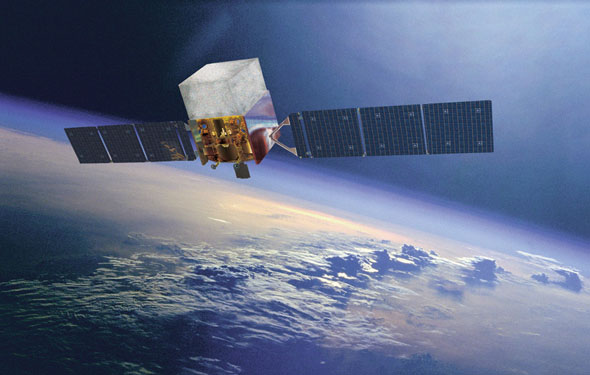
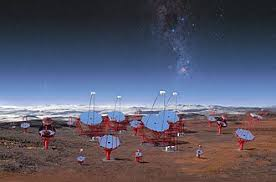

INFN · Fermi / NASA · CTA
Gamma-ray bursts from Fermi to CTA.
LAT data analysis, CTA simulations and spectral analysis across the overlapping high-energy range of the two observatories.

As part of my work in Italy, I analysed LAT data and searched for possible gamma-ray-burst emission above 100 GeV. I simulated bursts with CTA response functions and tools in the energy range where Fermi-LAT and CTA overlap, from a few GeV to 100 GeV.
I performed spectral analyses of CTA simulated data using several theoretical and physical models. This work is included in the second GRB LAT catalog.

